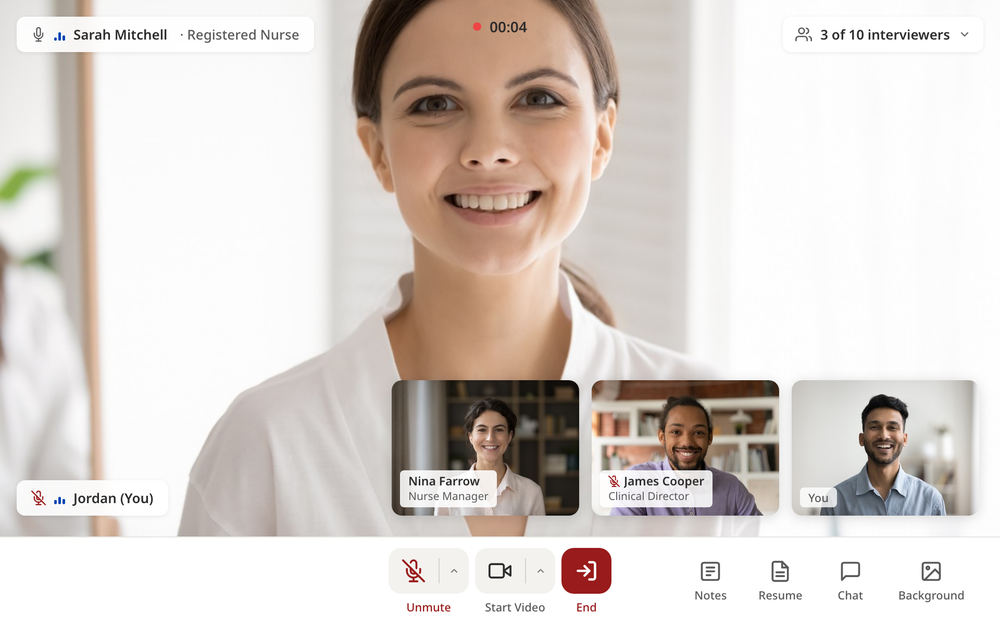

Panel interviews
How to bring more than one interviewer into the same video interview, what each person in the room can do, and how ratings and notes work when a team interviews together.
What a panel interview is
A panel interview is one candidate and more than one interviewer in the same JobFairX video interview. Everyone sees and hears the candidate, and the candidate sees everyone.
Interviewing as a team saves a second round. The hiring manager hears the answers first hand, the recruiter keeps the conversation moving, and each person leaves a rating and notes of their own. The candidate has one interview instead of three.
A room holds up to 10 interviewers. The candidate does not count toward that number, and there is only ever one candidate in a room.
Panel interviews run on JobFairX video calls. They are not available on phone interviews, in-person interviews, or video interviews held on your own meeting link. On those formats each interview has one interviewer.
Two ways to form a panel
There are two routes into the same room, and you can use both on one event.
Join an interview that is already running
During a live event, open the lobby and select the Interviewing room. Every interview in progress is listed with the people already in it under Interviewers. Select Join interview on a row to step into that room. Anyone added to the event as an interviewer can join this way, with no invitation needed.
Name the interviewers ahead of time
On a booked interview, open the Actions menu on its row and select Add interviewer. The row is on the dashboard under Interviews and Upcoming, and in the lobby's upcoming list before the event starts.
- Open the Actions menu on the interview and select Add interviewer.
- Tick the people who should be in this interview. The list shows everyone already added to the event as an interviewer.
- If the same team should sit in on every interview, tick Use these interviewers for all interviews on this event.
- Select Save. The names appear in the row's Interviewers column.
Naming someone on an interview lists them on it. It does not send a separate email, because the event already has its own setting for who receives updates.
Only people who are already interviewers on the event appear in the list. If a colleague is missing, add them to the event first, using the Adding interviewers steps, and then come back to the interview.
Panel interviews for every interview
If your whole team should be in every interview, switch it on once instead of row by row. In the event's Interview settings, after the list of interviewers, there is one switch: Do you want panel interviews for all interviews? The same switch is on the event's edit page, which opens from the pencil on the event's row on your dashboard: under Interviewers & updates, it sits after the list of interviewers.
Both switches change the same setting, so turning it on in one place turns it on in the other. When the Interviewers & updates section is closed, its summary shows whether panel interviews are on, for example 5 interviewer(s) added | Panel interviews on | 1 daily update recipient(s).
With the switch on, every interview on the event, booked now or later, has all of the event's interviewers. It is off by default. You can still change the people on any single interview from its row, and that interview keeps its own team.
Guests who join by link
Sometimes you want someone in the room who is not an interviewer on the event: a department head sitting in, or a colleague who only needs to watch one conversation. For that, the interview has a guest link.
Inside the room, select the interviewer counter at the top right to open the In the room list. Under Share a link with team members, select Copy guest link and send it to your colleague. No login is required. The link is for this interview only, so share it only with people on your team.
A guest has limited rights:
- A guest can use chat and change their background.
- A guest cannot open the resume, take notes or give feedback.
- A guest counts toward the 10 people in the room and does not use one of your interviewer places.
If someone needs to rate the candidate or write notes, add them to the event as an interviewer. Guest access is for people who only need to see and hear the interview.
In the room
The candidate stays large in the middle. Each interviewer has a small tile with their name and, if they added one, their role in the company. A counter at the top right reads how many interviewers are in the room out of 10, and opens the In the room list.

The interviewer who started the interview has End. Everyone else has Leave, which takes only them out of the room. Ending the interview ends it for everyone, so a colleague who needs to step out early should use Leave. When the interview ends, every interviewer in the room is asked for a rating.
Feedback and notes
Each interviewer gives their own answer: Yes, Maybe or No. Everyone on the interview can see all the answers, and each person can change only their own. That rule applies to the account owner too.
In the Interviewed room and on the event report, a panel interview shows a tally, for example 2 Yes, 1 Maybe. Select it to see who said what.
Notes work the same way. Each interviewer writes their own notes, every interviewer on that interview can read them, and the candidate never sees them.
How many interviewers you can add
The number of interviewers on an event follows your package: Starter has 2, Growth has 5, and Pro is unlimited. Your own account counts as one. Those are the people who can join panels with full rights. Guests do not use one of these places.
What to do next
Where to go from here.
- Adding interviewers Bringing colleagues onto an event so they can interview with you.
- Running your event day What the lobby shows before and during an event, and how to run an interview.
- AI interview notes What the note taker records in a video interview and what it never does.
- Choosing your interview slot length 15 or 30 minute interview slots, and how the choice shapes your event day.
- Event performance summary Reviewing how an event did and exporting the people who signed up.
Still need help?
If something on this page does not match what you see in your account, contact JobFairX support and include your event name and date.